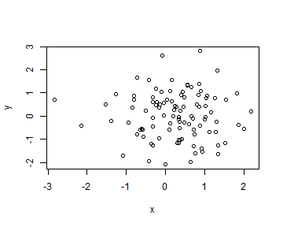
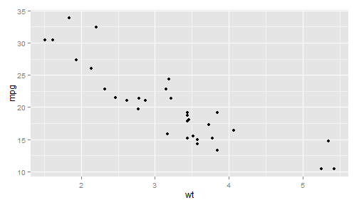

- Insert Markdown
\[\frac{-b \pm \sqrt{b^2 - 4 a c}}{2a}\]
- Use an empty line followed by three dashes to separate slides!
Happy Data Science Student 1
Improving my skills
\[\frac{-b \pm \sqrt{b^2 - 4 a c}}{2a}\]
y <- rnorm(100); x <- rnorm(100)
plot(x,y)

require(ggplot2)
qplot(wt, mpg, data = mtcars)
